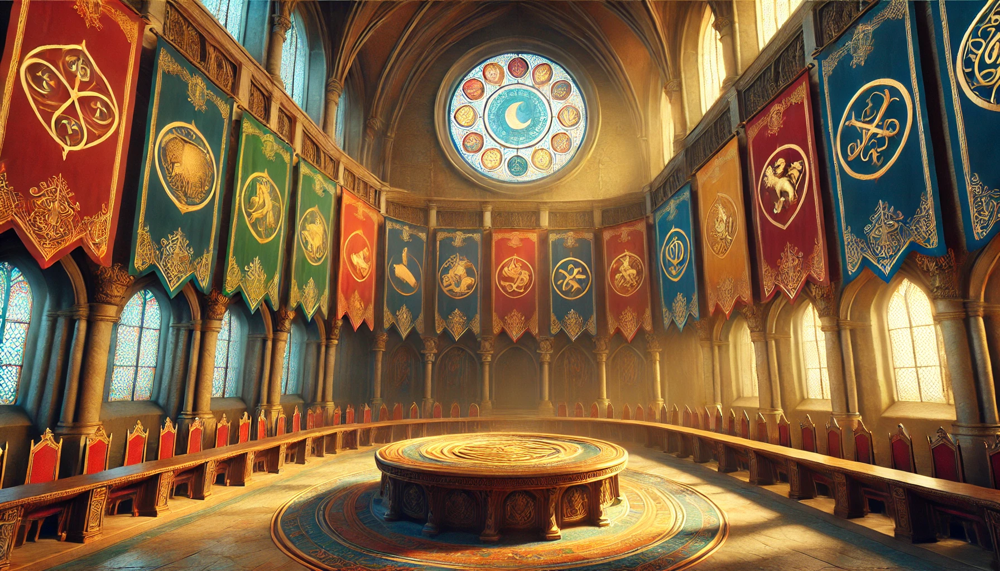
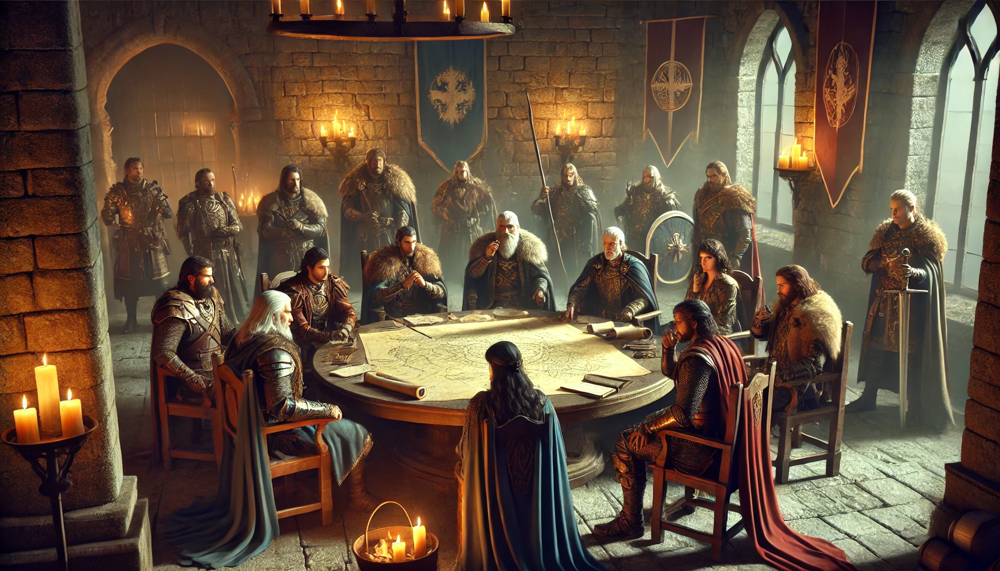

Casas Nobles

Una Casa Noble en Eldoria: Defensores del Reino
En "Eldoria: Defensores del Reino", una Casa Noble es mucho más que una dinastía de sangre real; es una fuerza central en la estructura política, militar y mágica del reino. Estas casas no solo gobiernan vastos territorios, sino que también son guardianes de las tradiciones ancestrales, protectores de sus tierras y líderes en la lucha contra las amenazas que asedian Eldoria.
Características de una Casa Noble¶
Linaje y Herencia¶
Cada Casa Noble de Eldoria posee una historia rica y venerable, con orígenes que se remontan a tiempos inmemoriales. Estas casas han forjado su poder a través de generaciones, consolidando su autoridad y legitimidad. El linaje de una casa es una fuente de orgullo y también de responsabilidad, pues cada generación debe mantener y expandir el legado que le ha sido confiado.
Territorios y Pode¶
Las casas nobles gobiernan vastas regiones del reino, cada una con características geográficas únicas, desde montañas imponentes hasta bosques místicos o fértiles llanuras. Estos territorios no solo proporcionan recursos esenciales como alimentos, minerales y riquezas, sino que también son baluartes de poder militar y estratégico. Los vasallos y habitantes de estos territorios deben lealtad a sus señores nobles, quienes a cambio les ofrecen protección y justicia.
Influencia y Alianzas¶
Las casas nobles ejercen una influencia considerable en la política del reino, siendo actores clave en la corte de Eldoria. A través de matrimonios estratégicos, alianzas, tratados y pactos, las casas tejen redes de poder que pueden garantizar la estabilidad del reino o precipitar su ruina. La habilidad para manejar estas relaciones es crucial, pues una casa aislada está destinada a caer.
Magia y Poder Sobrenatural¶
Muchas casas nobles han cultivado un profundo conocimiento de la magia y lo sobrenatural. A lo largo de generaciones, han adquirido artefactos poderosos, establecido pactos con entidades arcanas y dominado rituales ancestrales. Estos poderes pueden ser tanto una bendición como una maldición, y su uso puede cambiar el destino de la casa y del reino en su conjunto.
Ambición y Legado¶
La ambición es un rasgo definitorio de las Casas Nobles. Cada una tiene objetivos que van más allá de la mera supervivencia: expandir su territorio, asegurar su linaje, o ascender al trono de Eldoria. Estas metas impulsan a las casas a actuar, a veces de maneras que desafían la moralidad o el bien común. El legado de la casa es lo que motiva a cada generación a superar a la anterior, buscando grabar su nombre en la historia de Eldoria.
El Papel de una Casa Noble en la Defensa de Eldoria¶

En "Eldoria: Defensores del Reino", las casas nobles no solo están preocupadas por sus propios intereses, sino que también tienen la responsabilidad de proteger el reino contra fuerzas oscuras y enemigos externos. Cada decisión tomada por una casa noble tiene el potencial de alterar el curso de la historia, no solo para ellos, sino para todo Eldoria.
-
Guardianas del Reino: Las casas nobles son las primeras y últimas líneas de defensa contra las amenazas que buscan destruir Eldoria. Ya sea mediante la construcción de fortificaciones impenetrables, la forja de alianzas con otras facciones, o el uso de poderes arcanos, estas casas son fundamentales para la supervivencia del reino.
-
Balanzas del Poder: El equilibrio entre las casas nobles es delicado. Mientras algunas buscan unificar el reino bajo su estandarte, otras trabajan en las sombras para debilitar a sus rivales. Este juego de poder y política es esencial para mantener la estabilidad en Eldoria, pero también es una fuente constante de conflicto.
-
Líderes de la Gente: Las casas nobles no solo lideran a sus ejércitos, sino que también guían a sus pueblos. Son responsables del bienestar de sus vasallos y deben asegurarse de que sus territorios prosperen, incluso en tiempos de guerra. Esto les obliga a tomar decisiones difíciles, equilibrando la necesidad de proteger su herencia con la necesidad de salvar el reino.
Proceso de Creación de una Casa Noble con Habilidades Estratégicas Especializadas¶
1. Concepto Inicial¶
- Nombre de la Casa: Elige un nombre que refleje la historia, carácter y legado de la Casa Noble.
- Lema (Aspecto): El lema de la casa es un aspecto clave que define su filosofía o misión. Este lema puede ser invocado en situaciones que reflejen los valores o metas de la casa.
- Historia Breve: Escribe una breve historia de la casa, incluyendo su origen, momentos clave, y su situación actual en Eldoria.
- Emblema: Dibuja un emblema de tu casa noble, incluyendo aquellos motivos heráldicos que consideres apropiados y relacionados con su nombre, lema y aspecto.
2. Aspectos de la Casa¶
Los aspectos capturan la esencia de la Casa Noble y permiten invocar sus fortalezas o enfrentar sus debilidades.
-
Lema (Aspecto de Identidad): Define la identidad de la casa.
- Ejemplo: "Por la Espada y el Fuego," "Honor y Gloria," "Sabiduría Eterna."
-
Aspecto de Territorio: Describe el territorio que la casa controla.
- Ejemplo: "Las Llanuras Doradas, Tierra de Abundancia," "Las Montañas de Hierro," "Los Puertos del Mar de Zafiro."
-
Aspecto de Ambición: Refleja el objetivo o motivación principal de la casa.
- Ejemplo: "Unificar Eldoria bajo una sola corona," "Erradicar a los enemigos ancestrales," "Proteger el legado arcano de la casa."
3. Selección de Habilidades Estratégicas¶
Las habilidades estratégicas representan las capacidades principales de la casa en la gestión del reino y la guerra. En este sistema, los valores de las habilidades pueden variar ampliamente para permitir una especialización más profunda y crear un balance único para cada casa.
- Recursos: Gestión y movilización de riqueza y suministros.
- Defensa: Fortificación y protección de los territorios.
- Espionaje: Obtención de información, infiltración y protección de secretos.
- Diplomacia: Forja de alianzas, negociación de tratados, y manejo de relaciones.
- Magia: Uso y control de poderes arcanos y rituales ancestrales.
Asignación de Valores: - Cada casa tiene 10 puntos para distribuir entre las cinco habilidades estratégicas. - Los valores pueden ser distribuidos de la siguiente manera: - Una habilidad a +5 (Extremadamente especializada) - Otra habilidad a +3 (Muy fuerte) - Otra habilidad a +2 (Competente) - Dos habilidades a 0 (Débil o inexistente)
Ejemplo de Distribución: - Recursos: +5 (Extremadamente competente) - Defensa: +3 (Muy fuerte) - Espionaje: +2 (Competente) - Diplomacia: 0 (Débil) - Magia: 0 (Inexistente)
4. Personalización con Stunts¶
Los stunts permiten a la casa sobresalir en situaciones particulares, ofreciendo ventajas específicas basadas en sus habilidades estratégicas. Escoge 3 stunts para personalizar a tu casa.
-
Recursos:
- Tesoros Escondidos: +2 a Recursos cuando necesitas movilizar fondos ocultos o inesperados.
- Mano Invisible: +2 a Recursos cuando manipulas el mercado para desestabilizar a una casa rival.
-
Defensa:
- Murallas Imbatibles: +2 a Defensa cuando refuerzas las defensas de una fortaleza clave.
- Guardias Eternos: +2 a Defensa cuando movilizas tropas especialmente entrenadas para resistir asedios prolongados.
-
Espionaje:
- Ojos en la Sombra: +2 a Espionaje cuando necesitas obtener información sin ser detectado.
- Red Secreta: +2 a Espionaje cuando estableces o expandes tu red de agentes en territorio enemigo.
-
Diplomacia:
- Tratos Sagrados: +2 a Diplomacia cuando forjas alianzas difíciles de romper debido a juramentos o vínculos profundos.
- Embajadores de Élite: +2 a Diplomacia cuando envías emisarios para negociar acuerdos importantes.
-
Magia:
- Ritual de Poder: +2 a Magia cuando realizas un ritual para proteger o fortalecer tus tierras.
- Encantamientos Antiguos: +2 a Magia cuando utilizas hechizos arcanos para ganar ventaja en la batalla o en la política.
5. Definición de Relaciones Iniciales¶
- Aliados y Rivales: Define al menos una casa aliada y una casa rival dentro del juego, ya sea creada por otros jugadores o preexistente en el lore de Eldoria. Estas relaciones iniciales ayudarán a establecer dinámicas de juego y enriquecer la narrativa.
6. Establecer el Objetivo Principal¶
- Definir un Objetivo de Campaña: Cada casa debe tener un objetivo a largo plazo que guíe sus acciones durante la campaña. Este objetivo debe estar alineado con su aspecto de ambición y puede ser algo que persiguen abiertamente o en secreto.
7. Dibujar el Territorio¶
- Selecciona uno de los territorios de Eldoria y dibuja los dominios de tu casa. Incluye poblaciones, fuentes de recursos naturales, accidentes geográficos, etc.
- No olvides encajar tu dibujo con los bordes del territorio.
Ejemplo de Creación de una Casa Noble¶
Nombre de la Casa: Casa Valdir
Lema (Aspecto de Identidad): "Forjados en Fuego y Sangre"
Historia Breve: La Casa Valdir es conocida por su dominio en la guerra y su capacidad para movilizar recursos rápidamente. Situada en las montañas del norte, su territorio es difícil de invadir y su riqueza proviene de minas de oro y hierro. Sin embargo, su falta de diplomacia y magia los hace vulnerables a la política y a las amenazas sobrenaturales.
Aspectos: - Lema (Aspecto de Identidad): "Forjados en Fuego y Sangre" - Territorio: "Las Montañas de Hierro" - Ambición: "Dominar Eldoria a través de la conquista militar"
Habilidades Estratégicas: - Recursos: +5 (Extremadamente competente) - Defensa: +3 (Muy fuerte) - Espionaje: +2 (Competente) - Diplomacia: 0 (Débil) - Magia: 0 (Inexistente)
Stunts: - Recursos: Tesoros Escondidos (+2 cuando movilizas fondos ocultos). - Defensa: Murallas Imbatibles (+2 cuando refuerzas las defensas de una fortaleza clave). - Espionaje: Ojos en la Sombra (+2 cuando obtienes información crucial sin ser detectado).
Relaciones Iniciales: - Aliado: Casa Thorne (Aliados en la explotación de recursos minerales y control de rutas comerciales). - Rival: Casa Eldarion (Rivales por el control de las regiones del norte, con frecuentes enfrentamientos en las fronteras).
Objetivo Principal: Expandir su control militar sobre las tierras vecinas y consolidar su poder como la fuerza dominante en Eldoria.